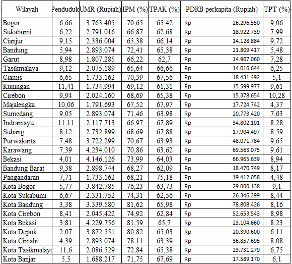
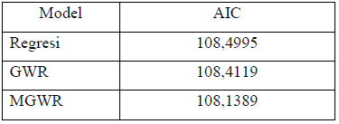

ABSTRAK
Mixed Geographically Weighted Regression (MGWR) merupakan regresi yang digunakan untuk menganalisis data spasial, model ini merupakan gabungan dari model regresi linear global dan model Geographically Weighted Regression (GWR). Estimasi parameter yang didapatkan dari analisis ini sebagian bersifat global dan sebagian lainnya bersifat lokal
Penelitian ini bertujuan untuk mendapatkan estimasi parameter model MGWR yang diaplikasikan pada pemetaan penduduk miskin yang ada di Jawa Barat pada Tahun 2019. Variabel respon yang digunakan pada penelitian ini adalah persentase penduduk miskin dan variabel bebasnya adalah Upah minimun regional (X1), Indeks pembangunan manusia (X2), Tingkat partisipasi angkatan kerja (X3), Produk Domestik Regional Bruto perkapita (X4) dan Tingkat pengangguran terbuka (X5)
Dari hasil penelitian didapat bahwa model MGWR memiliki nilai AIC yang paling kecil dari regresi global dan GWR. Variabel yang mempengaruhinya adalah Upah minimun regional (X1) dan Indeks pembangunan manusia (X2), UMR berpengaruh secara global dan IPM berpengaruh secara lokal.
PEMBAHASAN
data yang akan digunakan sebagai berikut :

Data Eksplorasi
Persentase Kemiskinan

terdapat 3 wilayah yang persentase kemiskinannya melebihi 10% yaitu Kuningan, Indramayu dan Kota Tasikmalaya.Kota Depok dengan persentase hanya sebesar 2,07% saja dari keseluruhan penduduknya
Upah Minimun Regional
UMR yang paling besar di Jawa Barat Tahun 2019 dipegang oleh wilayah karawang sebesar Rp. 4.234.010 dan paling kecil di antara wilayah yang lain adalah wilayah Kota Banjar sebesar Rp. 1.688.217. Rata-rata UMR di Jawa Barat Tahun 2019 sebesar Rp. 2.731.766.
Indeks Pembangunan Manusia
terdapat 3 wilayah dengan IPM tertinggi yaitu Kota Bandung, Kota Bekasi dan Kota Depok untuk IPM terendah adalah Cianjur sebesar 65,38% berbeda hampir 16% dari wilayah dengan tingkat IPM tertinggi. Rata-rata IPM di Jawa Barat Tahun 2019 sebesar 71,64%.
Tingkat Partisipasi Angkatan Kerja
TPAK yang tertinggi dipegang oleh wilayah Pangandaran sebesar 75,18% yang berbeda cukup jauh dengan wilayah yang lainnya. Wilayah dengan nilai TPAK terkecil adalah wilayah Kuningan yang hanya sebesar 61,31%. Rata-rata TPAK di Jawa Barat Tahun 2019 sebesar 65,26%.
Produk Domestik Regional Bruto perkapita
PDRB perkapita terbesar dipegang oleh wilayah Kota Bandung yang mencapai Rp. 78.808.425,7 dan yang terkecil adalah wilayah Tasikmalaya yang hanya sebesar Rp. 14016644,4 berbeda hampir lima kali lipat dengan wilayah terbesar. Rata-rata PDRB perkapita di Jawa Barat Tahun 2019 sebesar Rp. 28950421,8
Tingkat Pengangguran Terbuka
TPT tertinggi adalah Cirebon sebesar 10,28% dan wilayah dengan TPT terkecil adalah wilayah Majalengka dengan persentase TPTnya hanya sebesar 4,37% saja. Rata-rata persentase TPT di Jawa Barat sebesar 7,79%.
Regresi Linear
Uji Simultan
H0: β0= β1= β2 =...= 0 atau variabel bebas tidak mempengaruhi model
H1 :Terdapat minimal 1 βp ≠ 0 atau variabel bebas mempengaruhi model.
didapatkan p-value sebesar 0,000 dengan tingkat signifikansi sebesar α = 0,05, karena lebih kecil dari α maka H0 ditolak dapat disimpulkan bahwa minimal ada satu variabel bebas mempengaruhi model atau model signifikan.
Uji Parsial
H0: βp = 0
H1 : βp ≠ 0
Pengujian parameter secara parsial menggunakan tingkat signifikansi sebesar 5 %. Maka dapat disimpulkan bahwa variabel yang mempengaruhi model adalah variabel UMR dan variabel IPM.
Geographically Weighted Regression
Uji Simultan
H0: β0(u1,v1)= β1(u2,v2) =...= βk(un,vn) = 0 atau tidak ada perbedaan yang signifikan antara model regresi global dengan model GWR
H1 : Terdapat minimal 1 βp(un,vn) ≠ 0 atau terdapat perbedaan yang signifikan antara model regresi global dengan model GWR.
Berdasarkan F-tabel didapatkan nilai 1,786. Dengan demikian dapat diambil keputusan bahwa H0 diterima maka tidak terdapat perbedaan yang signifikan antara model regresi global dengan model GWR.
Mixed Geographically Weighted Regression
Uji Simultan
H0: βp(un,vn)= βp tidak ada perbedaan yang signifikan antara model regresi global dengan MGWR.
H1 : Terdapat minimal p βp(un,vn) ≠ 0 ada perbedaan yang signifikan antara model regresi global dengan MGWR.
Berdasarkan F-tabel didapatkan nilai 1,786. Dengan demikian dapat diambil keputusan bahwa H0 diterima maka tidak terdapat perbedaan yang signifikan antara model regresi global dengan model MGWR.
Berdasarkan hasil analisis di dapatkan model sebagai berikut:
dari 27 wilayah di Jawa Barat terdapat persamaan variabel yang mempengaruhi kemiskinan yaitu variabel UMR dan variabel IPM yang berpengaruh di antara variabel lainnya yang diteliti pada penelitian ini. Jika diambil satu contoh model pada lokasi pertama (u1,v1) yaitu Bogor mendapatkan nilai sebesar :
ŷ = 29,7068 - 0,000001(3763405) - 0,2765(70,65)
Interpretasi:
- Jika UMR wilayah Bogor naik sebesar Rp.1.000.000 maka persentase kemiskinan akan turun sebesar 1% ketika variabel lain dianggap konstan.
- Jika IPM wilayah Bogor naik sebesar 10% maka persentase kemiskinan akan turun sebesar 2,7% ketika variabel lain dianggap konstan.
Pemilihan Model Terbaik
Berdasarkan 3 model yang telah dianalisis berikut adalah nilai AIC antara model regresi global, model GWR dan model MGWR yang disajikan dalam tabel di bawah:

Berdasarkan tabel diatas dapat diketahui bahwa dari 3 jenis metode yang digunakan menunjukan bahwa nilai AIC model MGWR lebih kecil dibandingkan nilai AIC model yang lainnya yaitu sebesar 108,1389. Jadi model MGWR adalah model terbaik untuk memodelkan data kemiskinan di Jawa Barat Tahun 2019